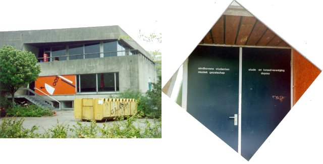

| |
|
Van 1987 tot 1996 was ESMG Quadrivium gehuisvest in de Speeldoos, een ruimte in de bunker boven de societeit van Demos. Nu behoort deze ruimte tot de societeit van SSRE.
Op de benedenverdieping zie je de 'kijkdoos', zo genoemd omdat het uitgaansvolk van de AOR hier binnen kon kijken: geen erg populaire repetitieplek dus. Achterin was voorzien in een opslagruimte.
De ruimte achter de blauwe bol tegen de zuidgevel heette 'de blauwe ballon'. De grote zaal met het balkon op de eerste verdieping had de toepasselijke naam 'de balkon'...
De naam van de bestuurskamer in de bunker was 'het crisiscentrum', terwijl de toiletten 'de riool' heetten.
Op de rechterfoto zie je de deur van de Speeldoos in beter tijden; toen wij in 1996 naar Scala vertrokken, zaten er nog maar een handvol letters op geplakt!

|
|